أحوّل بياناتك المتناثرة في ملفات Excel وأنظمة متعددة إلى تقارير Power BI تفاعلية وواضحة، تساعدك على متابعة الأداء الفعلي، واكتشاف نقاط الهدر والفرص، واتخاذ قرارات مبنية على أرقام لا على انطباعات. I turn your data — scattered across Excel files and multiple systems — into clear, interactive Power BI dashboards that help you track real performance, spot waste and opportunity, and make decisions based on numbers, not guesswork.
+15 عامًا خبرة · PMP® Above Target · المدينة المنورة، السعودية 15+ years experience · PMP® Above Target · Madinah, Saudi Arabia
كل مشروع يوضح القطاع، المشكلة، طبيعة البيانات، خطوات التحليل، والنتائج والتوصيات.Each project shows the sector, the problem, the nature of the data, the analysis steps, and the results and recommendations.
نماذج تصميمية توضح أسلوب تنظيم وتصميم لوحات المعلومات، وتحتوي أرقامًا وأسماء افتراضية لأغراض العرض فقط — وليست بيانات عملاء حقيقيين. Concept designs illustrating dashboard layout and design style, using sample/placeholder figures and names for display purposes only — not real client data.
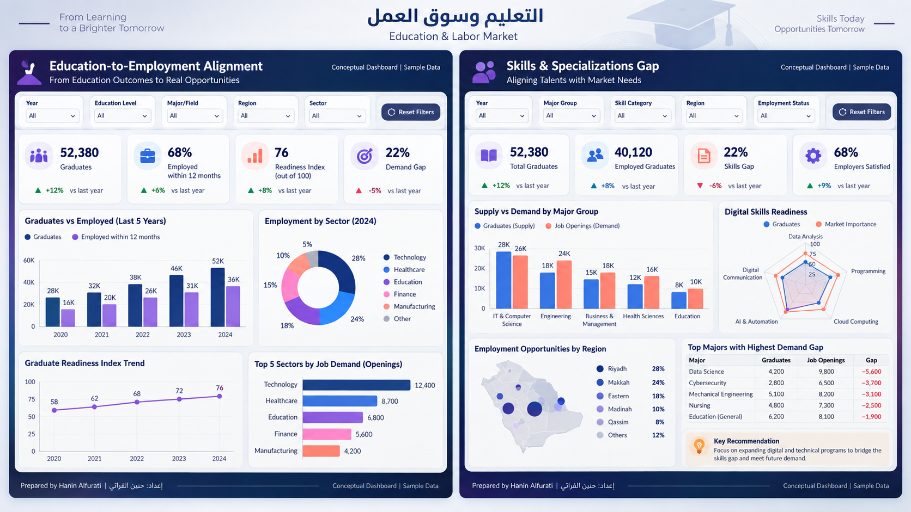
التوافق بين مخرجات التعليم واحتياجات التوظيفEducation-to-employment alignment & skills gap
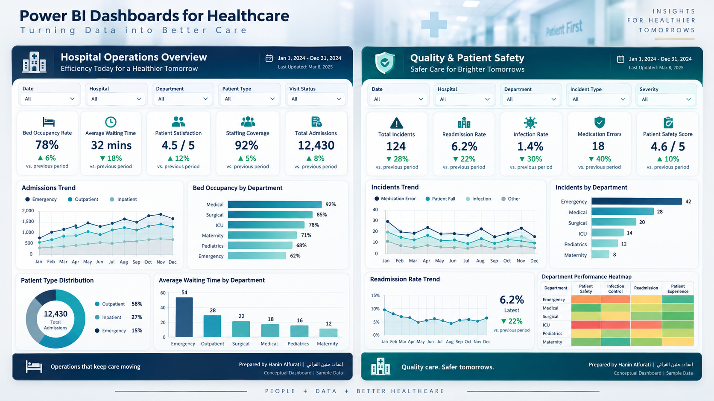
عمليات المستشفى وجودة وسلامة المرضىHospital operations & patient safety
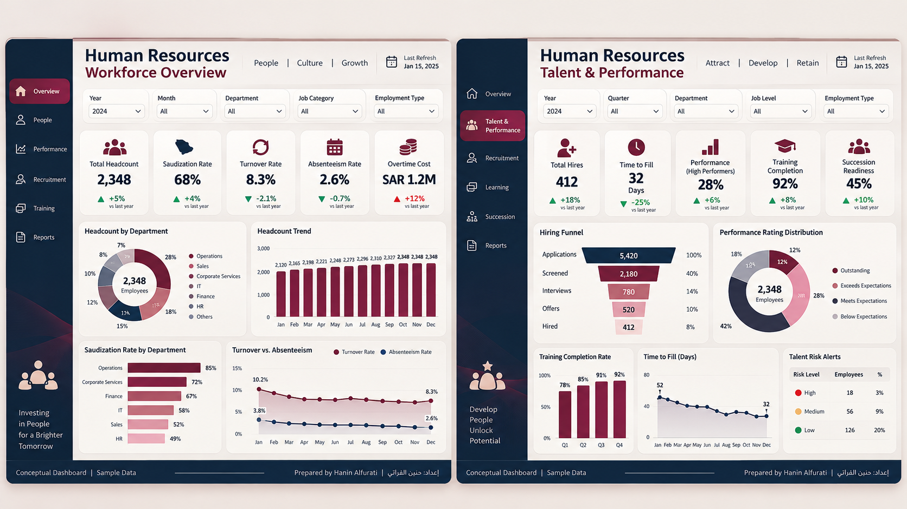
نظرة عامة على القوى العاملة والأداء والمواهبWorkforce overview & talent performance
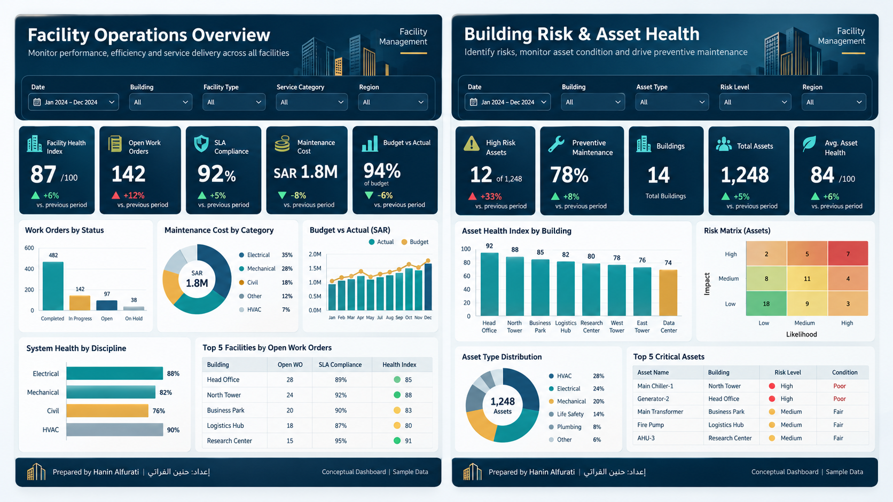
عمليات المرافق ومخاطر الأصولFacility operations & asset risk
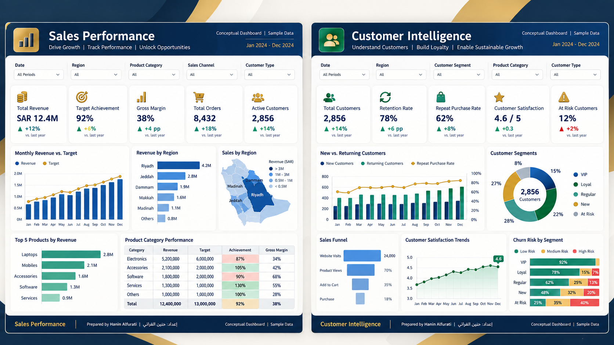
أداء المبيعات وذكاء العملاءSales performance & customer intelligence
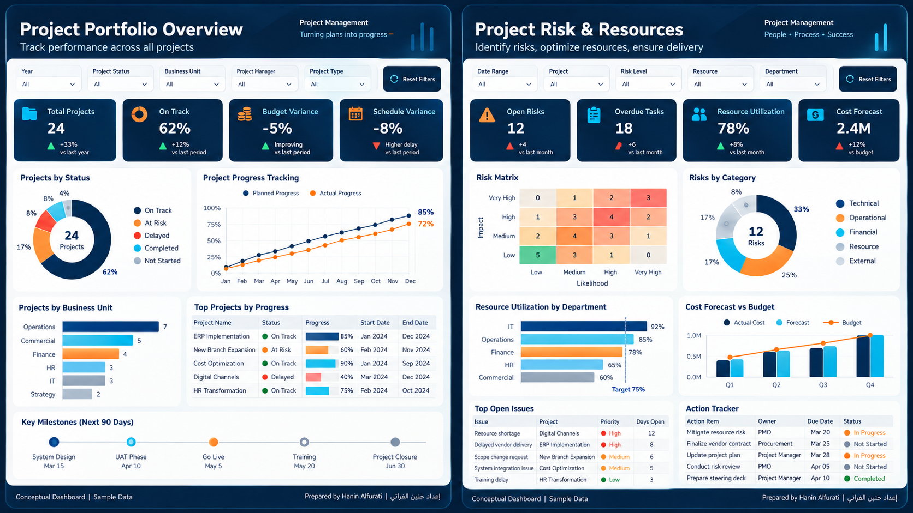
نظرة عامة على المشاريع والمخاطر والمواردPortfolio overview, risk & resources
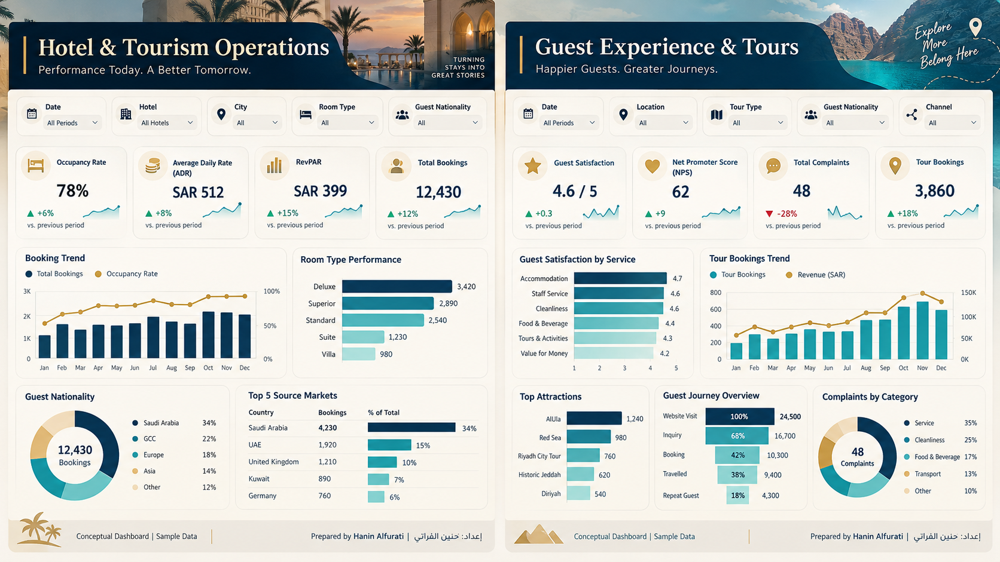
عمليات الفنادق وتجربة الضيوف والجولاتHotel operations & guest experience
خدمات متكاملة تجمع بين تطوير الأعمال وذكاء الأعمال، من تنظيف البيانات إلى تصميم لوحات معلومات تنفيذية جاهزة للقرار — لأن أي تطوير أو تقدّم حقيقي يبدأ من البيانات، وتحليلها، والتعمّق فيها.Integrated business development and business intelligence services — from data cleaning to decision-ready executive dashboards — because real growth and progress always start with data: analyzed, and deeply understood.
فهم أهداف عملك والمشكلة الفعلية قبل البدء بأي تحليل، وتحديد نطاق المشروع والمخرجات بدقة.Understanding your business goals and the real problem before analysis begins, and precisely defining scope and deliverables.
مراجعة ملفات Excel وCSV، ومعالجة البيانات الناقصة والمكررة والأخطاء، وتجهيزها للتحليل.Reviewing Excel/CSV files, fixing missing, duplicate and erroneous data, and preparing it for analysis.
اطلب هذه الخدمةRequest This Serviceربط الجداول ومصادر البيانات المتعددة، وتصميم نموذج بيانات منظم وقابل للتوسع.Linking multiple tables and data sources, and designing a structured, scalable data model.
اطلب هذه الخدمةRequest This Serviceتحديد مؤشرات الأداء المناسبة لطبيعة عملك، ومقارنة الأداء الفعلي بالمستهدف والفترات السابقة.Defining the right KPIs for your business, and comparing actual vs. target and prior periods.
اطلب هذه الخدمةRequest This Serviceإنشاء معادلات DAX ومراجعة المعادلات الحالية ومعالجة المشكلات المتعلقة بالفلاتر والمقارنات الزمنية.Building DAX measures, reviewing existing ones, and fixing filter/time-comparison issues.
تحليل الأصول وأوامر العمل والتذاكر والصيانة الوقائية والمواد والموردين والميزانية وSLA.Analyzing assets, work orders, tickets, preventive maintenance, materials, vendors, budget, and SLA.
تصميم لوحات معلومات تفاعلية جاهزة لعرضها على الإدارة، لمتابعة الأداء والمبيعات والتكاليف والعمليات والميزانيات.Designing interactive dashboards ready for management review — tracking performance, sales, costs, operations, and budgets.
اطلب هذه الخدمةRequest This Serviceمراجعة التقارير الحالية وتحسين نموذج البيانات والمعادلات والتصميم والأداء وتجربة المستخدم دون إعادة البناء من الصفر.Reviewing existing dashboards and improving the data model, DAX, design, performance, and UX without rebuilding from scratch.
اطلب هذه الخدمةRequest This Serviceتقليل الوقت المستغرق في تحديث التقارير يدويًا، وإعداد آلية تحديث بيانات دورية ومنظمة.Reducing time spent updating reports manually, and setting up a recurring, organized data-refresh process.
اطلب هذه الخدمةRequest This Serviceمخرجات واضحة ومحددة مسبقًا، بلا مفاجآت في آخر المشروع.Clear, pre-defined deliverables — no surprises at the end of the project.
تعبئة نموذج طلب الخدمة بالتفاصيل الأساسية لمشروعك.Fill in the service request form with your project's basics.
مكالمة قصيرة لفهم أهدافك ونطاق العمل الفعلي.A short call to understand your goals and real scope.
مراجعة عينة أولية لتقييم جودة البيانات المتاحة قبل أي التزام.Reviewing a sample to assess your data's quality before any commitment.
الاتفاق الكتابي على ما سيتم تسليمه بدقة.Written agreement on exactly what will be delivered.
عرض سعر مفصّل ومدة تنفيذ واضحة قبل البدء.A detailed quote and a clear timeline before work begins.
بدء العمل رسميًا فور الموافقة على النطاق والعرض.Work formally begins once the scope and quote are approved.
تجهيز البيانات وتحليلها بعمق قبل بناء أي تقرير.Preparing and deeply analyzing your data before building any report.
بناء لوحة المعلومات وفق النطاق المتفق عليه بالضبط.Building the dashboard exactly per the agreed scope.
مراجعتك للتقرير وتطبيق جولات التعديل المتفق عليها.Your review and the agreed revision rounds.
تسليم التقرير النهائي مع جلسة شرح لطريقة الاستخدام والتحديث.Final delivery with a session walking you through usage and updates.
لا توجد أسعار ثابتة — يُحدَّد السعر دائمًا بعد مراجعة نطاق مشروعك الفعلي.There are no fixed prices — pricing is always determined after reviewing your project's actual scope.
مناسبة للأفراد وأصحاب المشاريع الصغيرة الذين يبدؤون رحلتهم مع البياناتFor individuals and small-project owners starting their data journey
يُحدّد السعر بعد مراجعة نطاق العملPrice Based on Project Scope
مناسبة للشركات والإدارات التي تحتاج تقارير أعمق ومتعددة المصادرFor companies and departments needing deeper, multi-source reporting
يُحدّد السعر بعد مراجعة نطاق العملPrice Based on Project Scope
مناسبة للمشاريع الكبيرة أو المخصصة أو الدعم المستمر حسب حاجتكFor large, custom projects or ongoing support tailored to your needs
يُحدّد السعر بعد مراجعة نطاق العملPrice Based on Project Scope
قائدة مشاريع وعمليات وتميّز تشغيلي، حاصلة على شهادة PMP®، ولدي خبرة تتجاوز 15 عامًا في إدارة المشاريع والعمليات وإدارة المرافق. على مدار هذه المسيرة، اكتشفت أن أكبر فجوة تواجه الشركات ليست في نقص البيانات، بل في غياب من يحوّلها إلى صورة واضحة يمكن البناء عليها. لذلك أعمل اليوم على تحويل البيانات التشغيلية المبعثرة إلى مؤشرات وتقارير Power BI تساعد القيادات على مراقبة الأداء، وإدارة المخاطر، واتخاذ قرارات قابلة للتنفيذ فعليًا — لا مجرد أرقام على الورق. A PMP®-certified projects, operations, and operational excellence professional with more than 15 years of experience in project management, operations, and facilities. Along the way, I found that the real gap companies face isn't a lack of data — it's the absence of someone who can turn it into a clear, actionable picture. Today, I turn scattered operational data into Power BI dashboards and metrics that help leadership monitor performance, manage risk, and make decisions they can actually act on.
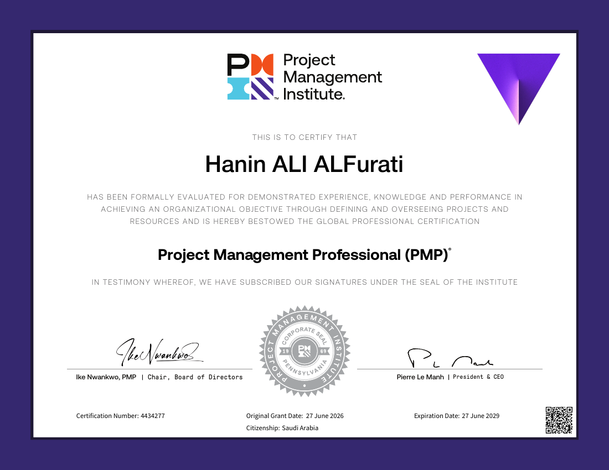
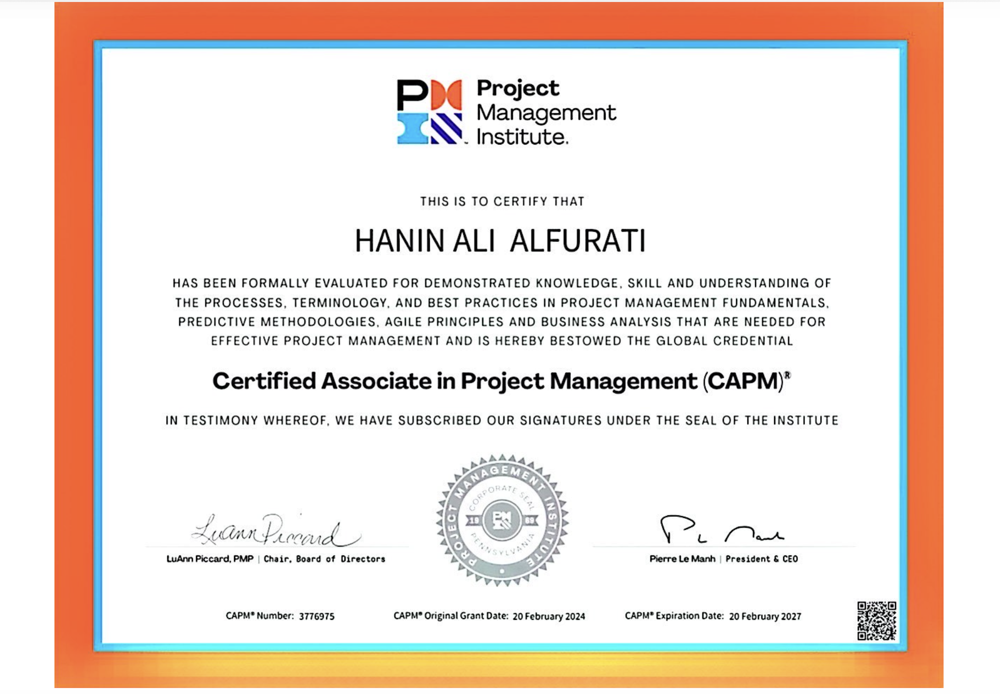
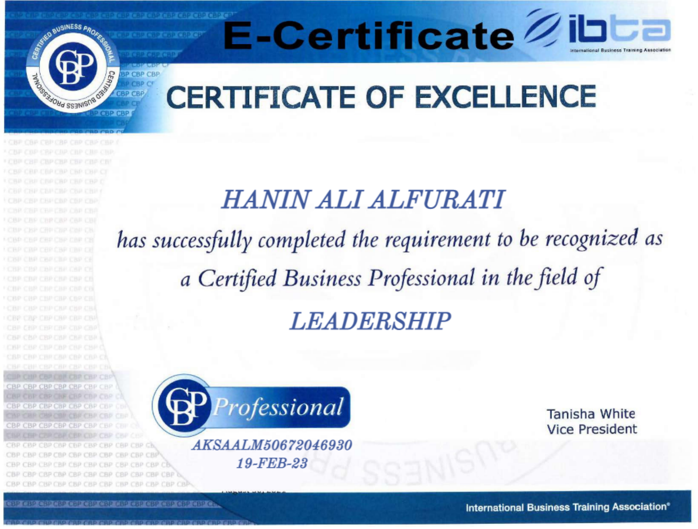
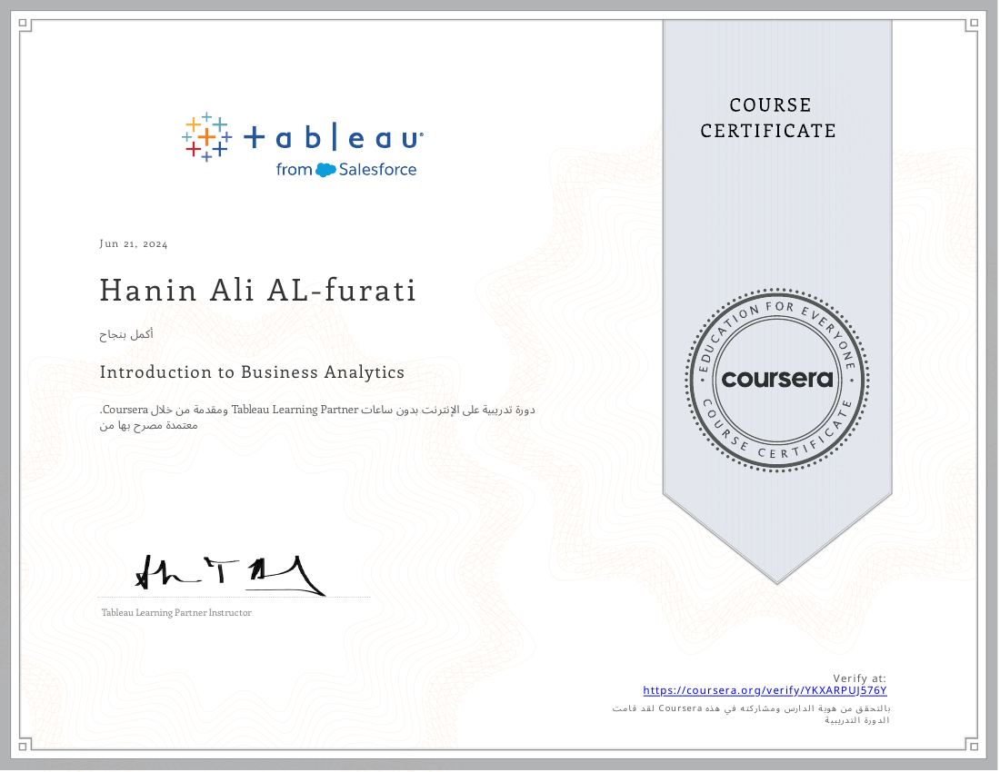
روابط تحقق إضافية متوفرة عند الطلب.Additional verification links are available upon request.
لنحوّل بياناتك إلى لوحة معلومات تساعدك على فهم الأداء، واكتشاف الفرص والمشكلات، واتخاذ قرار أفضل. Let's transform your data into an interactive dashboard that helps you understand performance, identify opportunities, and make better decisions.